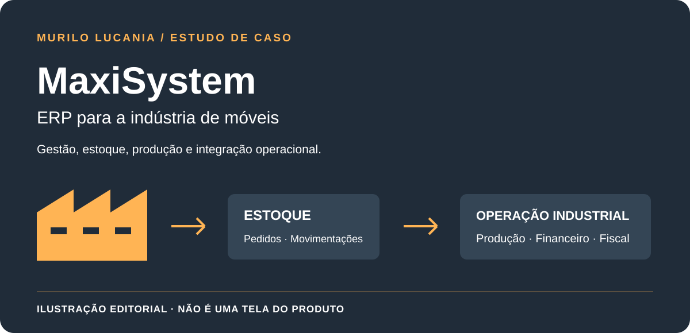
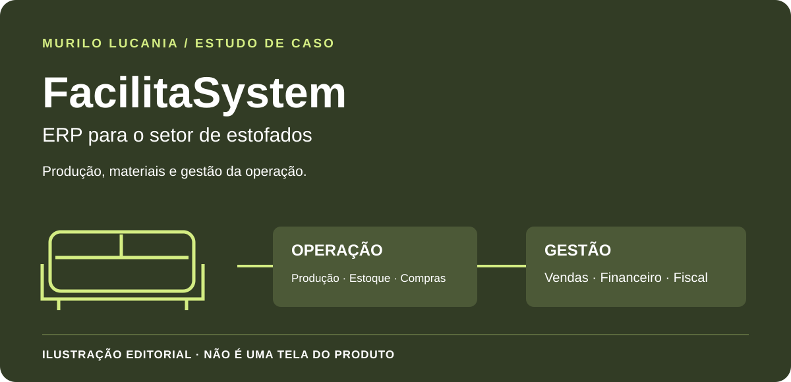
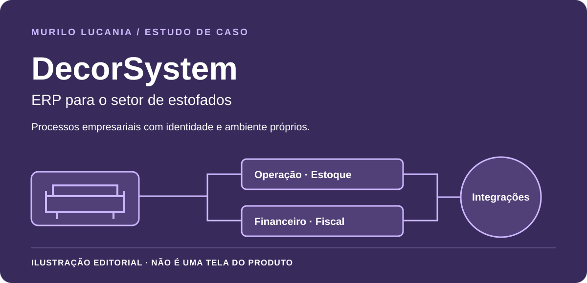
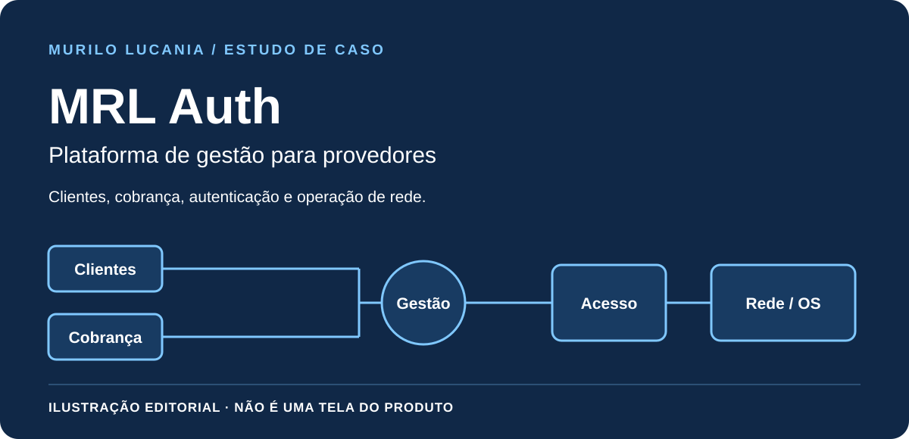
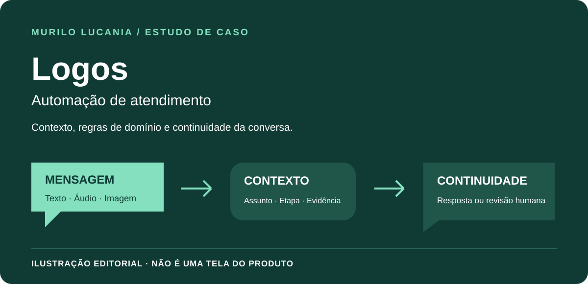
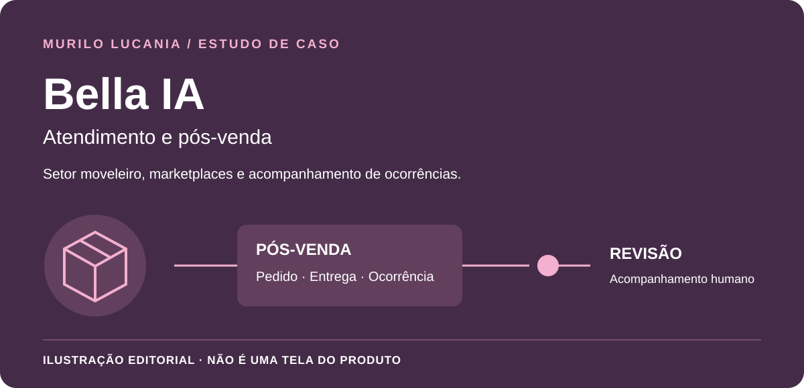

MaxiSystem
A gestão por trás da indústria de móveis.
Estoque, produção, pedidos, financeiro e integrações no contexto da fabricação de móveis.
FUNDADOR. CRIADOR. CONSTRUTOR.
Da indústria ao provedor de internet: transformo necessidades da operação em produtos próprios, conectando gestão, software e infraestrutura.
Murilo LucaniaFundador e CEO da MRL NET
01 / PROJETOS SELECIONADOS
Seis soluções distintas. Cada uma nasce de um problema de negócio e possui finalidade própria. Conheça o contexto e minha participação em cada projeto.

A gestão por trás da indústria de móveis.
Estoque, produção, pedidos, financeiro e integrações no contexto da fabricação de móveis.

Produção e gestão no setor de estofados.
Materiais, produção, compras, vendas e financeiro conectados à operação de estofados.

Processos empresariais, identidade própria.
Gestão para estofados, reunindo operação, estoque, financeiro, fiscal e integrações.

O provedor visto como uma operação integrada.
Clientes, planos, cobrança, autenticação, rede e ordens de serviço no mesmo contexto de gestão.

A conversa continua. O contexto também.
Automação de atendimento que relaciona mensagem, domínio e etapa para dar continuidade ao atendimento.

Pós-venda que acompanha a ocorrência.
Atendimento no setor moveleiro e marketplaces, com contexto e revisão humana quando necessária.
As capas são ilustrações editoriais. Não são capturas dos produtos. Interfaces comerciais, código proprietário e dados de clientes permanecem privados.
02 / COMO EU TRABALHO
Construir um sistema começa por entender quem vai usá-lo. Meu trabalho conecta as decisões de negócio à implementação e à continuidade da operação.
Ouvir as pessoas, compreender os processos e identificar o problema que vale resolver.
Definir responsabilidades, fluxos e integrações sem perder de vista o uso real.
Desenvolver com testes, alterações revisáveis e cuidado com dados e permissões.
Observar a operação, investigar falhas e aprimorar o produto de forma controlada.
03 / QUEM ESTÁ POR TRÁS
Sou Murilo Lucania, fundador e CEO da MRL NET e criador dos sistemas apresentados neste portfólio.
Atuo desde 2011 em tecnologia e telecomunicações. Minha experiência reúne gestão empresarial, operação de provedores, infraestrutura e desenvolvimento de software. Também desenvolvo o ApoiaGest Solution, projeto de ERP em estruturação.
Sou bacharel em Engenharia de Software, tecnólogo em Análise e Desenvolvimento de Sistemas e bacharel em Teologia, além de professor de Teologia.
JavaScript · TypeScript · Node.js · React · Python · SQL · APIs
Linux · Docker · MikroTik · RADIUS · Zabbix · Grafana
CÓDIGO PÚBLICO / PROJETO INDEPENDENTE
O Operational Flow Lab é um laboratório educativo separado, com dados fictícios e testes. Não é uma demonstração dos seis produtos comerciais.
PRÓXIMA CONVERSA